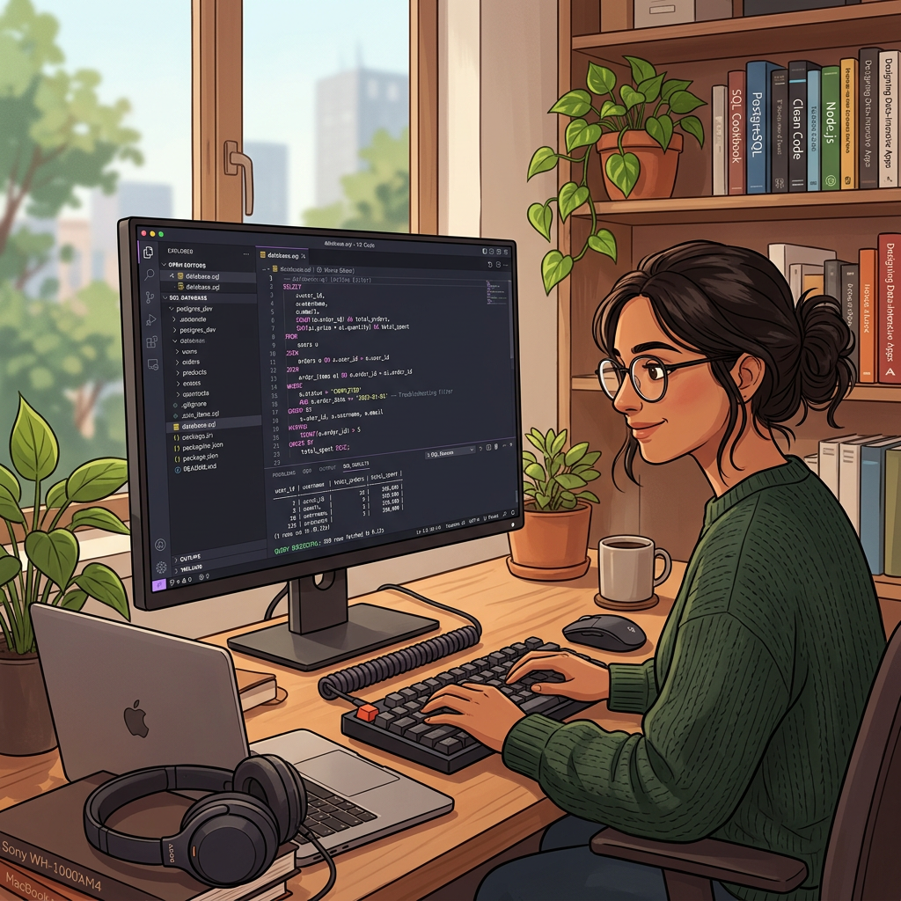
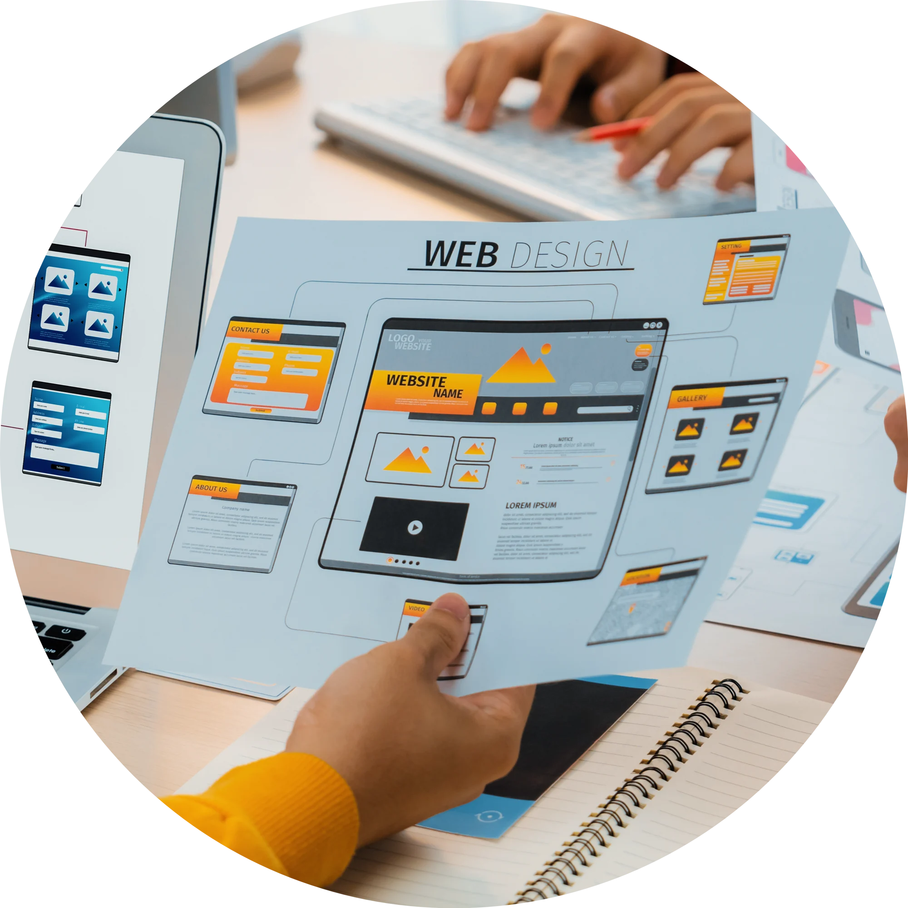

My Skills
Here are some of the skills and areas I am developing as a frontend developer.
Frontend Development

I build responsive and user-friendly websites using HTML5, CSS, and JavaScript. I focus on clean structure, accessibility, and modern design practices.
Web Design
I design simple, elegant interfaces with a focus on usability and visual balance. I enjoy creating layouts that are both beautiful and easy to navigate.
Learning Journey

I am currently expanding my knowledge into full-stack development, learning how to build complete web applications and improve my problem-solving skills.